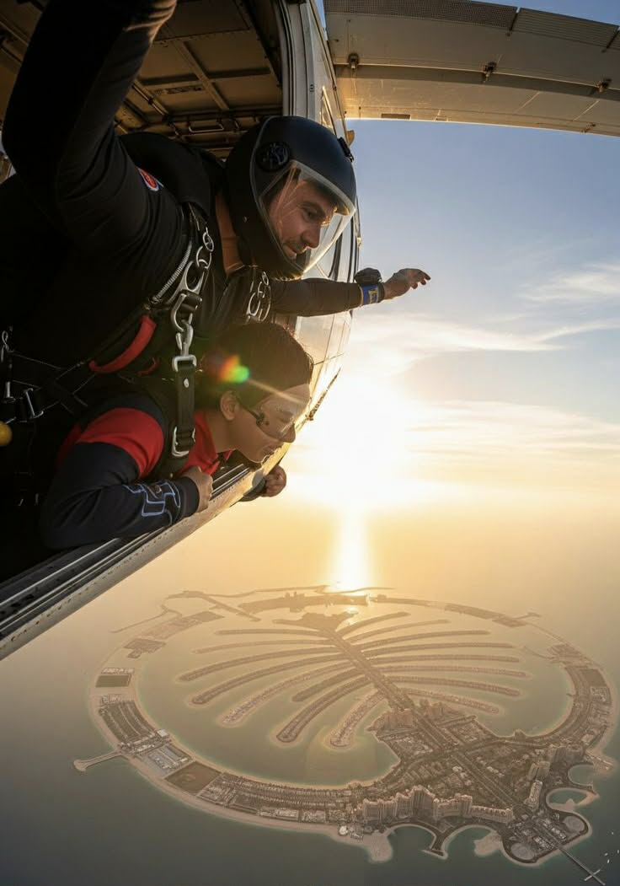
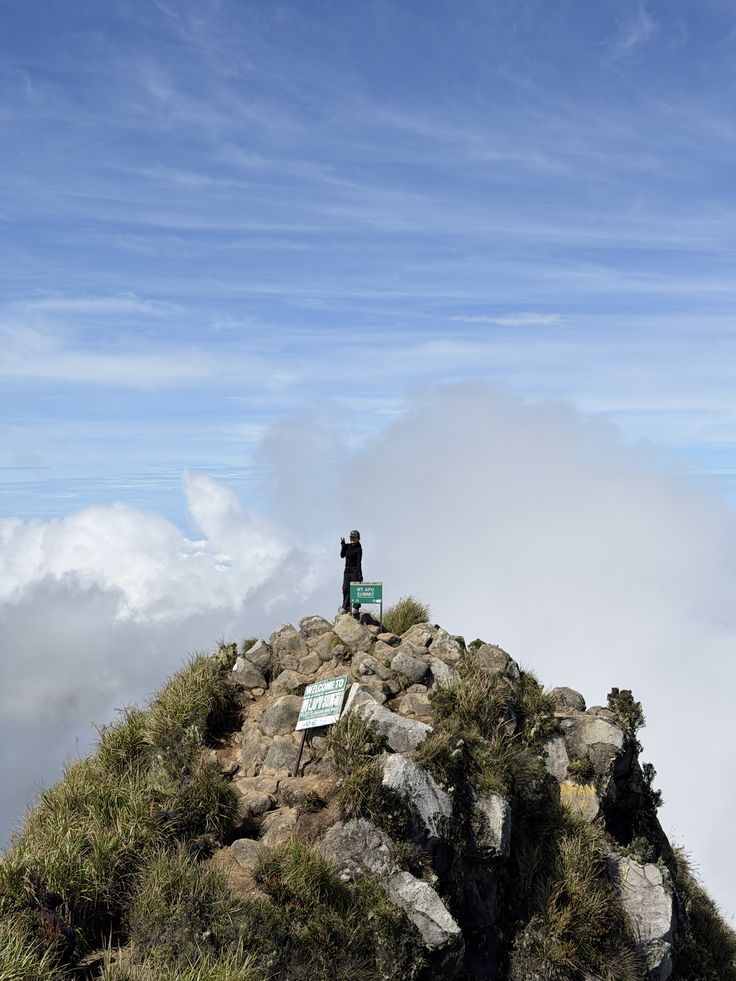
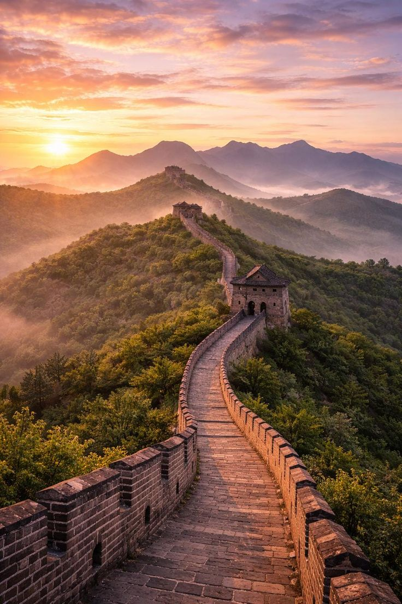
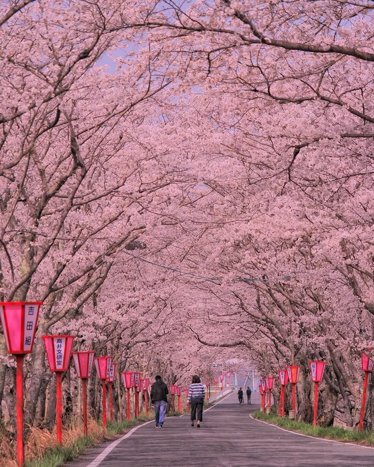
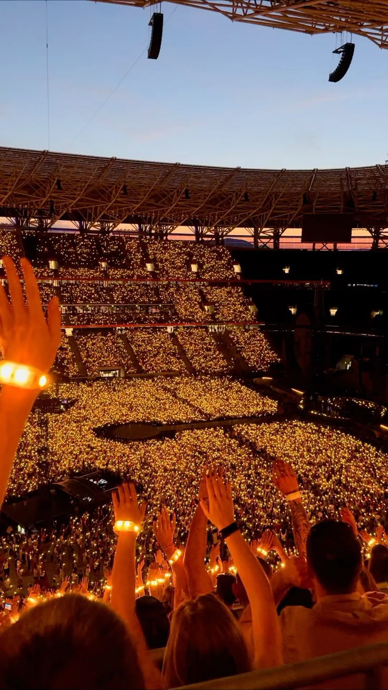
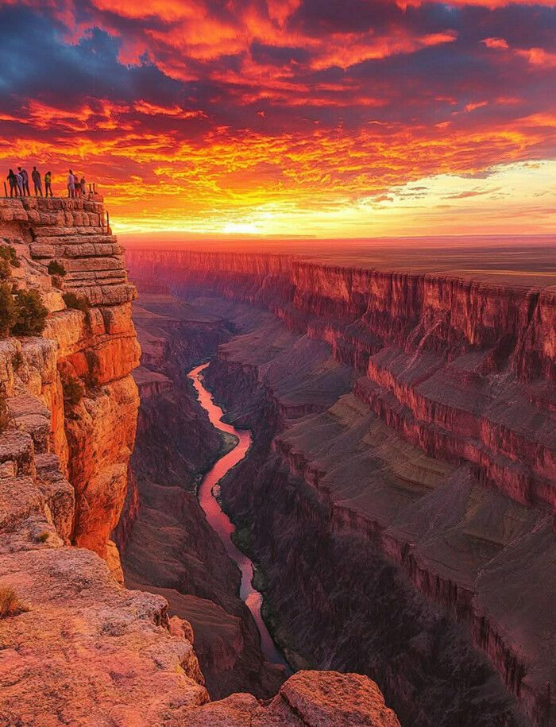
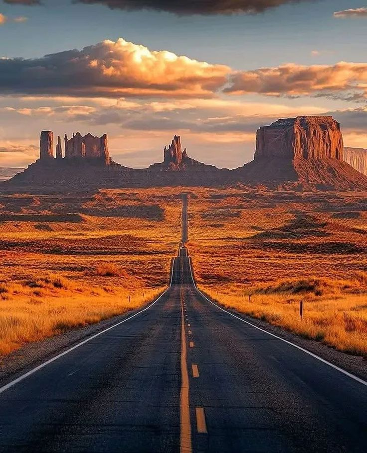

Life is a series of chapters waiting to be written. This bucket list represents my personal milestones—experiences that challenge my boundaries and dreams that inspire me to keep moving forward.

Location: Dubai, UAE
Sky diving in Dubai is a world-renowned experience, offering a breathtaking view of the Palm Jumeirah. I want to do this to finally conquer my fear of heights and experience the ultimate feeling of freedom.

Location: Davao City, Davao Del Sur
Mt. Apo is the highest peak in the Philippines, a challenging yet rewarding trek through volcanic trails. I want to hike it to test my physical endurance and stand on the highest point of my home country.

Location: China
The Great Wall of China is an ancient series of walls and fortifications that stretches thousands of miles across northern China. I want to walk through it to witness this architectural marvel and feel the weight of centuries of history beneath my feet.
Location: Cappadocia, Turkey
Cappadocia is famous for its "fairy chimney" rock formations and its sky filled with hundreds of balloons at sunrise. I want to ride one to peacefully drift over the unique landscape and experience a quiet, golden morning from above.

Location: Japan
The "Sakura" or cherry blossom season in Japan is a beautiful time when the country turns shades of pink and white. I want to witness it because it represents a time of renewal and is one of the most serene natural displays on Earth.

Location: Philippine Arena
Coldplay's concerts are known for their vibrant energy and emotional connection. I want to attend to experience the magic of their music live and be part of a crowd united by pure joy.

Location: Northern Arizona, USA
The Grand Canyon is a masterpiece of nature, showing the power of time and geology. I want to see it to witness its immense scale in person and be reminded of how vast our world truly is.

Location: Saudi Arabia
Highway 10 is famous for being the longest straight road in the world. I want to drive on it to experience the unique, meditative solitude of the desert and the thrill of an endless horizon.